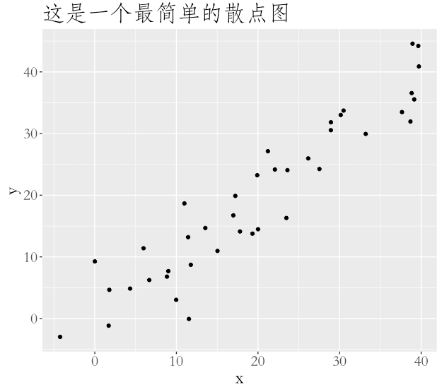
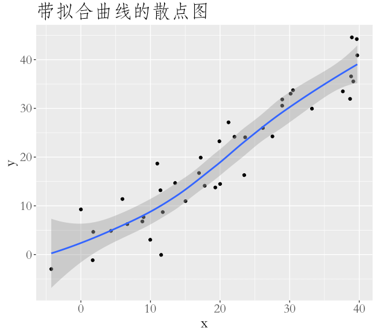
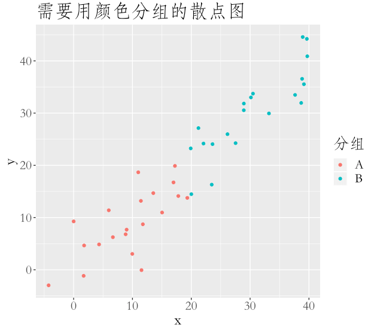
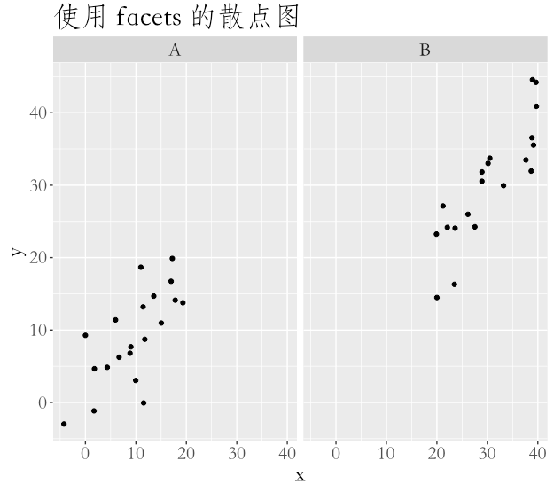

<!DOCTYPE html>
<html>
<head>
  <!-- hexo-inject:begin --><!-- hexo-inject:end --><meta charset="utf-8">
  <meta http-equiv="X-UA-Compatible" content="IE=edge" />
  
  <title>ggplot系列之1：散点图 | 写作即思考</title>
  
  

  
  <link rel="alternate" href="/blog/atom.xml" title="写作即思考">
  

  <meta name="HandheldFriendly" content="True" />
  <meta name="apple-mobile-web-app-capable" content="yes">
  <meta name="viewport" content="width=device-width, initial-scale=1, maximum-scale=1">
  <!-- meta -->
  

  <!-- link -->
  <link rel="stylesheet" href="https://cdn.jsdelivr.net/gh/fancyapps/fancybox@3.5.7/dist/jquery.fancybox.min.css" />
  
  <link rel="stylesheet" href="https://cdn.jsdelivr.net/npm/node-waves@0.7.6/dist/waves.min.css">
  
  <link rel="stylesheet" href="https://cdn.jsdelivr.net/npm/@fortawesome/fontawesome-free@5.10.1/css/all.min.css">
  

  
  <link rel="shortcut icon" type='image/x-icon' href="/blog/images/favicon.ico">
  

  
    
<link rel="stylesheet" href="/blog/style.css">

  

  <script>
    function setLoadingBarProgress(num) {
      document.getElementById('loading-bar').style.width=num+"%";
    }
  </script>

  
  
<meta name="generator" content="Hexo 4.2.0"><link rel="alternate" href="/blog/atom.xml" title="写作即思考" type="application/atom+xml"><!-- hexo-inject:begin --><!-- hexo-inject:end -->
</head>

<body>
  
  
  <!-- hexo-inject:begin --><!-- hexo-inject:end --><div class="cover-wrapper">
    <cover class='cover post half'>
      
        
  <h1 class='title'>写作即思考</h1>


  <div class="m_search">
    <form name="searchform" class="form u-search-form">
      <input type="text" class="input u-search-input" placeholder="" />
      <i class="icon fas fa-search fa-fw"></i>
    </form>
  </div>

<div class='menu navgation'>
  <ul class='h-list'>
    
      
        <li>
          <a class="nav home" href="/blog/"
            
            
            id="blog">
            <i class='fas fa-home fa-fw'></i>&nbsp;首页
          </a>
        </li>
      
        <li>
          <a class="nav home" href="/blog/archives/"
            
              rel="nofollow"
            
            
            id="blogarchives">
            <i class='fas fa-archive fa-fw'></i>&nbsp;归档
          </a>
        </li>
      
        <li>
          <a class="nav home" href="/blog/about/"
            
              rel="nofollow"
            
            
            id="blogabout">
            <i class='fas fa-info-circle fa-fw'></i>&nbsp;关于本站
          </a>
        </li>
      
    
  </ul>
</div>

      
    </cover>
    <header class="l_header pure">
  <div id="loading-bar-wrapper">
    <div id="loading-bar" class="pure"></div>
  </div>

	<div class='wrapper'>
		<div class="nav-main container container--flex">
      <a class="logo flat-box" href='/blog/' >
        
          写作即思考
        
      </a>
			<div class='menu navgation'>
				<ul class='h-list'>
          
  					
  						<li>
								<a class="nav flat-box" href="/blog/"
                  
                  
                  id="blog">
									<i class='fas fa-home fa-fw'></i>&nbsp;首页
								</a>
							</li>
      			
  						<li>
								<a class="nav flat-box" href="/blog/archives/"
                  
                    rel="nofollow"
                  
                  
                  id="blogarchives">
									<i class='fas fa-archive fa-fw'></i>&nbsp;归档
								</a>
							</li>
      			
      		
				</ul>
			</div>

			
				<div class="m_search">
					<form name="searchform" class="form u-search-form">
						<input type="text" class="input u-search-input" placeholder="搜索" />
						<i class="icon fas fa-search fa-fw"></i>
					</form>
				</div>
			
			<ul class='switcher h-list'>
				
					<li class='s-search'><a class="fas fa-search fa-fw" href='javascript:void(0)'></a></li>
				
				<li class='s-menu'><a class="fas fa-bars fa-fw" href='javascript:void(0)'></a></li>
			</ul>
		</div>

		<div class='nav-sub container container--flex'>
			<a class="logo flat-box"></a>
			<ul class='switcher h-list'>
				<li class='s-comment'><a class="flat-btn fas fa-comments fa-fw" href='javascript:void(0)'></a></li>
        
          <li class='s-toc'><a class="flat-btn fas fa-list fa-fw" href='javascript:void(0)'></a></li>
        
			</ul>
		</div>
	</div>
</header>
	<aside class="menu-phone">
    <header>
		<nav class="menu navgation">
      <ul>
        
          
            <li>
							<a class="nav flat-box" href="/blog/"
                
                
                id="blog">
								<i class='fas fa-home fa-fw'></i>&nbsp;首页
							</a>
            </li>
          
            <li>
							<a class="nav flat-box" href="/blog/archives/"
                
                  rel="nofollow"
                
                
                id="blogarchives">
								<i class='fas fa-archive fa-fw'></i>&nbsp;归档
							</a>
            </li>
          
       
      </ul>
		</nav>
    </header>
	</aside>
<script>setLoadingBarProgress(40);</script>

  </div>


  <div class="l_body">
    <div class='body-wrapper'>
      <div class='l_main'>
  

  <article id="post" class="post white-box article-type-post" itemscope itemprop="blogPost">
    


  <section class='meta'>
    
    
    <div class="meta" id="header-meta">
      
        
  
    <h1 class="title">
      <a href="/blog/2018/01/05/ggplot_1_scatter_plot/">
        ggplot系列之1：散点图
      </a>
    </h1>
  


      
      <div class='new-meta-box'>
        
          
        
          
            <div class="new-meta-item date">
  <a class='notlink'>
    <i class="fas fa-calendar-alt" aria-hidden="true"></i>
    <p>2018-01-05</p>
  </a>
</div>

          
        
          
            
  
  <div class='new-meta-item category'>
    <a href='/blog/categories/%E6%95%B0%E6%8D%AE%E5%8F%AF%E8%A7%86%E5%8C%96/' rel="nofollow">
      <i class="fas fa-folder-open" aria-hidden="true"></i>
      <p>数据可视化</p>
    </a>
  </div>


          
        
          
            
  

          
        
          
            

          
        
      </div>
      
        <hr>
      
    </div>
  </section>


    <section class="article typo">
      <div class="article-entry" itemprop="articleBody">
        
<p>ggplot2 是 R 语言大神 Hadly Wickham 开发的数据可视化工具。Wickham 为数据可视化抽象出了一套“语法”，掌握这套语法后就可以系统性地生成可视化数据。</p>
<p>这个系列文章会介绍如何使用 ggplot2 做图。</p>
<p>本篇介绍最常见的散点图。</p>
<a id="more"></a>
<h2 id="准备数据"><a href="#准备数据" class="headerlink" title="准备数据"></a>准备数据</h2><p>每次我拿到数据的第一件事情，就是看看不同变量的散点图长啥样，看到散点图之后，就能对变量之间的关系做一定猜测了。</p>
<p>我们先准备一份用来画图的数据。</p>
<figure class="highlight r"><table><tbody><tr><td class="gutter"><pre><span class="line">1</span><br><span class="line">2</span><br><span class="line">3</span><br><span class="line">4</span><br><span class="line">5</span><br></pre></td><td class="code"><pre><span class="line">set.seed(<span class="number">955</span>)</span><br><span class="line">obs_num &lt;- <span class="number">40</span></span><br><span class="line">dat &lt;- data.frame(cond = rep(c(<span class="string">"A"</span>, <span class="string">"B"</span>), each = obs_num / <span class="number">2</span>),</span><br><span class="line">                  x = <span class="number">1</span>:obs_num + rnorm(obs_num, sd = <span class="number">3</span>),</span><br><span class="line">                  y = <span class="number">1</span>:obs_num + rnorm(obs_num, sd = <span class="number">3</span>))</span><br></pre></td></tr></tbody></table></figure>
<p>我们的模拟数据有3个变量，x 和 y 是数字，cond 是一个 categorical 变量。</p>
<h2 id="最简单的散点图"><a href="#最简单的散点图" class="headerlink" title="最简单的散点图"></a>最简单的散点图</h2><p>下面画一个最简单的散点图。</p>
<figure class="highlight r"><table><tbody><tr><td class="gutter"><pre><span class="line">1</span><br><span class="line">2</span><br><span class="line">3</span><br></pre></td><td class="code"><pre><span class="line">ggplot(dat, aes(x = x, y = y)) + </span><br><span class="line">  geom_point() + </span><br><span class="line">  labs(title = <span class="string">'这是一个最简单的散点图'</span>)</span><br></pre></td></tr></tbody></table></figure>
<p>结果如下图：<br></p>
<h2 id="添加拟合曲线"><a href="#添加拟合曲线" class="headerlink" title="添加拟合曲线"></a>添加拟合曲线</h2><p>有时我们想更清晰地看到数据趋势，ggplot 可以帮我们快速添加一条拟合曲线。</p>
<figure class="highlight r"><table><tbody><tr><td class="gutter"><pre><span class="line">1</span><br><span class="line">2</span><br><span class="line">3</span><br><span class="line">4</span><br></pre></td><td class="code"><pre><span class="line">ggplot(dat, aes(x = x, y = y)) + </span><br><span class="line">  geom_point() + </span><br><span class="line">  geom_smooth() +</span><br><span class="line">  labs(title = <span class="string">'带拟合曲线的散点图'</span>)</span><br></pre></td></tr></tbody></table></figure>
<p>结果如下图：</p>
<p></p>
<h2 id="给不同组的点上色"><a href="#给不同组的点上色" class="headerlink" title="给不同组的点上色"></a>给不同组的点上色</h2><p>如果数据中有不同的分组，我们会想在散点图中看到不同组的情况。</p>
<figure class="highlight r"><table><tbody><tr><td class="gutter"><pre><span class="line">1</span><br><span class="line">2</span><br><span class="line">3</span><br><span class="line">4</span><br></pre></td><td class="code"><pre><span class="line">ggplot(dat, aes(x = x, y = y, color = cond)) + </span><br><span class="line">  geom_point() + </span><br><span class="line">  labs(title = <span class="string">'需要用颜色分组的散点图'</span>,</span><br><span class="line">       color = <span class="string">'分组'</span>)</span><br></pre></td></tr></tbody></table></figure>
<p>结果如下图：</p>
<p></p>
<h2 id="使用-facets"><a href="#使用-facets" class="headerlink" title="使用 facets"></a>使用 facets</h2><p>如果组别太多，上色可能会让人眼花缭乱，这时我们可以使用 facets。</p>
<figure class="highlight r"><table><tbody><tr><td class="gutter"><pre><span class="line">1</span><br><span class="line">2</span><br><span class="line">3</span><br><span class="line">4</span><br></pre></td><td class="code"><pre><span class="line">ggplot(dat, aes(x = x, y = y)) + </span><br><span class="line">  geom_point() + </span><br><span class="line">  facet_wrap(~ cond) +</span><br><span class="line">  labs(title = <span class="string">'使用 facets 的散点图'</span>)</span><br></pre></td></tr></tbody></table></figure>
<p>结果如下图：</p>
<p></p>
<p>当然，我们也可以把颜色和 cond 结合起来，生成本文最开始那张图片。代码如下：</p>
<figure class="highlight r"><table><tbody><tr><td class="gutter"><pre><span class="line">1</span><br><span class="line">2</span><br><span class="line">3</span><br></pre></td><td class="code"><pre><span class="line">ggplot(dat, aes(x = x, y = y, color = cond)) + </span><br><span class="line">  geom_point() + </span><br><span class="line">  facet_wrap(~ cond)</span><br></pre></td></tr></tbody></table></figure>
<script>
        document.querySelectorAll('.github-emoji')
          .forEach(el => {
            if (!el.dataset.src) { return; }
            const img = document.createElement('img');
            img.style = 'display:none !important;';
            img.src = el.dataset.src;
            img.addEventListener('error', () => {
              img.remove();
              el.style.color = 'inherit';
              el.style.backgroundImage = 'none';
              el.style.background = 'none';
            });
            img.addEventListener('load', () => {
              img.remove();
            });
            document.body.appendChild(img);
          });
      </script>
      </div>
      
      
        <br>
        


  <section class='meta' id="footer-meta">
    <div class='new-meta-box'>
      
        
          
  
  <div class="new-meta-item meta-tags"><a class="tag" href="/blog/tags/R/" rel="nofollow"><i class="fas fa-tag" aria-hidden="true"></i><p>R</p></a></div>


        
      
    </div>
  </section>


      
      
          <div class="prev-next">
              
                  <section class="prev">
                      <span class="art-item-left">
                          <h6><i class="fas fa-chevron-left" aria-hidden="true"></i>&nbsp;上一页</h6>
                          <h4>
                              <a href="/blog/2018/02/13/stat_1_discrete_dist/" rel="prev" title="常用离散概率分布模型">
                                
                                    常用离散概率分布模型
                                
                              </a>
                          </h4>
                          
                              
                              <h6 class="tags">
                                  <a class="tag" href="/blog/tags/R/"><i class="fas fa-tag fa-fw" aria-hidden="true"></i> R</a> <a class="tag" href="/blog/tags/Statistics/"><i class="fas fa-tag fa-fw" aria-hidden="true"></i> Statistics</a>
                              </h6>
                          
                      </span>
                  </section>
              
              
          </div>
      
    </section>
  </article>


  <!-- 显示推荐文章和评论 -->


  


<!-- 根据页面mathjax变量决定是否加载MathJax数学公式js -->


  <script>
    window.subData = {
      title: 'ggplot系列之1：散点图',
      tools: true
    }
  </script>


</div>
<aside class='l_side'>
  
    
    
      
      
        
          
          
        
          
          
        
          
          
            
              
  <section class='widget toc-wrapper'>
    
<header class='pure'>
  <div><i class="fas fa-list fa-fw" aria-hidden="true"></i>&nbsp;&nbsp;本文目录</div>
  
    <!-- <div class='wrapper'><a class="s-toc rightBtn" rel="external nofollow noopener noreferrer" href="javascript:void(0)"><i class="fas fa-thumbtack fa-fw"></i></a></div> -->
  
</header>

    <div class='content pure'>
      <ol class="toc"><li class="toc-item toc-level-2"><a class="toc-link" href="#准备数据"><span class="toc-text">准备数据</span></a></li><li class="toc-item toc-level-2"><a class="toc-link" href="#最简单的散点图"><span class="toc-text">最简单的散点图</span></a></li><li class="toc-item toc-level-2"><a class="toc-link" href="#添加拟合曲线"><span class="toc-text">添加拟合曲线</span></a></li><li class="toc-item toc-level-2"><a class="toc-link" href="#给不同组的点上色"><span class="toc-text">给不同组的点上色</span></a></li><li class="toc-item toc-level-2"><a class="toc-link" href="#使用-facets"><span class="toc-text">使用 facets</span></a></li></ol>
    </div>
  </section>


            
          
        
          
          
        
          
          
        
      
    

  
</aside>

<footer id="footer" class="clearfix">
  
  
  <br>
  <div><p>博客内容遵循 <a href="https://creativecommons.org/licenses/by-nc-sa/4.0/deed.zh" target="_blank" rel="noopener">署名-非商业性使用-相同方式共享 4.0 国际 (CC BY-NC-SA 4.0) 协议</a></p>
</div>
</footer>
<script>setLoadingBarProgress(80);</script>


      <script>setLoadingBarProgress(60);</script>
    </div>
    <a class="s-top fas fa-arrow-up fa-fw" href='javascript:void(0)'></a>
  </div>
  <script src="https://cdn.jsdelivr.net/npm/jquery@3.3.1/dist/jquery.min.js"></script>

  <script>
    var GOOGLE_CUSTOM_SEARCH_API_KEY = "";
    var GOOGLE_CUSTOM_SEARCH_ENGINE_ID = "";
    var ALGOLIA_API_KEY = "";
    var ALGOLIA_APP_ID = "";
    var ALGOLIA_INDEX_NAME = "";
    var AZURE_SERVICE_NAME = "";
    var AZURE_INDEX_NAME = "";
    var AZURE_QUERY_KEY = "";
    var BAIDU_API_ID = "";
    var SEARCH_SERVICE = "hexo" || "hexo";
    var ROOT = "/blog/"||"/";
    if(!ROOT.endsWith('/'))ROOT += '/';
  </script>

<script src="//instant.page/1.2.2" type="module" integrity="sha384-2xV8M5griQmzyiY3CDqh1dn4z3llDVqZDqzjzcY+jCBCk/a5fXJmuZ/40JJAPeoU"></script>


  <script async src="https://cdn.jsdelivr.net/npm/scrollreveal@4.0.5/dist/scrollreveal.min.js"></script>
  <script type="text/javascript">
    $(function() {
      const $reveal = $('.reveal');
      if ($reveal.length === 0) return;
      const sr = ScrollReveal({ distance: 0 });
      sr.reveal('.reveal');
    });
  </script>


  <script src="https://cdn.jsdelivr.net/npm/node-waves@0.7.6/dist/waves.min.js"></script>
  <script type="text/javascript">
    $(function() {
      Waves.attach('.flat-btn', ['waves-button']);
      Waves.attach('.float-btn', ['waves-button', 'waves-float']);
      Waves.attach('.float-btn-light', ['waves-button', 'waves-float', 'waves-light']);
      Waves.attach('.flat-box', ['waves-block']);
      Waves.attach('.float-box', ['waves-block', 'waves-float']);
      Waves.attach('.waves-image');
      Waves.init();
    });
  </script>


  
  
  
    <script src="https://cdnjs.cloudflare.com/ajax/libs/jquery-backstretch/2.0.4/jquery.backstretch.min.js"></script>
    <script type="text/javascript">
      $(function(){
        if ('.cover') {
          $('.cover').backstretch(
          ["https://img.vim-cn.com/29/91197b04c13f512f734a76d4ac422d89dbe229.jpg"],
          {
            duration: "6000",
            fade: "2500"
          });
        } else {
          $.backstretch(
          ["https://img.vim-cn.com/29/91197b04c13f512f734a76d4ac422d89dbe229.jpg"],
          {
            duration: "6000",
            fade: "2500"
          });
        }
      });
    </script>
  


  
<script src="/blog/js/app.js"></script>


  
<script src="/blog/js/search.js"></script>


<!-- 复制 -->
<script src="https://cdn.jsdelivr.net/npm/clipboard@2/dist/clipboard.min.js"></script>
<script>
  let COPY_SUCCESS = "复制成功";
  let COPY_FAILURE = "复制失败";
  /*页面载入完成后，创建复制按钮*/
  !function (e, t, a) {
    /* code */
    var initCopyCode = function(){
      var copyHtml = '';
      copyHtml += '<button class="btn-copy" data-clipboard-snippet="">';
      copyHtml += '  <i class="fa fa-copy"></i><span>复制</span>';
      copyHtml += '</button>';
      $(".highlight .code pre").before(copyHtml);
      var clipboard = new ClipboardJS('.btn-copy', {
        target: function(trigger) {
          return trigger.nextElementSibling;
        }
      });

      clipboard.on('success', function(e) {
        //您可以加入成功提示
        console.info('Action:', e.action);
        console.info('Text:', e.text);
        console.info('Trigger:', e.trigger);
        success_prompt(COPY_SUCCESS);
        e.clearSelection();
      });
      clipboard.on('error', function(e) {
        //您可以加入失败提示
        console.error('Action:', e.action);
        console.error('Trigger:', e.trigger);
        fail_prompt(COPY_FAILURE);
      });
    }
    initCopyCode();

  }(window, document);

  /**
   * 弹出式提示框，默认1.5秒自动消失
   * @param message 提示信息
   * @param style 提示样式，有alert-success、alert-danger、alert-warning、alert-info
   * @param time 消失时间
   */
  var prompt = function (message, style, time)
  {
      style = (style === undefined) ? 'alert-success' : style;
      time = (time === undefined) ? 1500 : time*1000;
      $('<div>')
          .appendTo('body')
          .addClass('alert ' + style)
          .html(message)
          .show()
          .delay(time)
          .fadeOut();
  };

  // 成功提示
  var success_prompt = function(message, time)
  {
      prompt(message, 'alert-success', time);
  };

  // 失败提示
  var fail_prompt = function(message, time)
  {
      prompt(message, 'alert-danger', time);
  };

  // 提醒
  var warning_prompt = function(message, time)
  {
      prompt(message, 'alert-warning', time);
  };

  // 信息提示
  var info_prompt = function(message, time)
  {
      prompt(message, 'alert-info', time);
  };

</script>


<!-- fancybox -->
<script src="https://cdn.jsdelivr.net/gh/fancyapps/fancybox@3.5.7/dist/jquery.fancybox.min.js"></script>
<script>
  let LAZY_LOAD_IMAGE = "";
  $(".article-entry").find("fancybox").find("img").each(function () {
      var element = document.createElement("a");
      $(element).attr("data-fancybox", "gallery");
      $(element).attr("href", $(this).attr("src"));
      /* 图片采用懒加载处理时,
       * 一般图片标签内会有个属性名来存放图片的真实地址，比如 data-original,
       * 那么此处将原本的属性名src替换为对应属性名data-original,
       * 修改如下
       */
       if (LAZY_LOAD_IMAGE) {
         $(element).attr("href", $(this).attr("data-original"));
       }
      $(this).wrap(element);
  });
</script>


  <script>setLoadingBarProgress(100);</script><!-- hexo-inject:begin --><!-- hexo-inject:end -->
</body>
</html>
